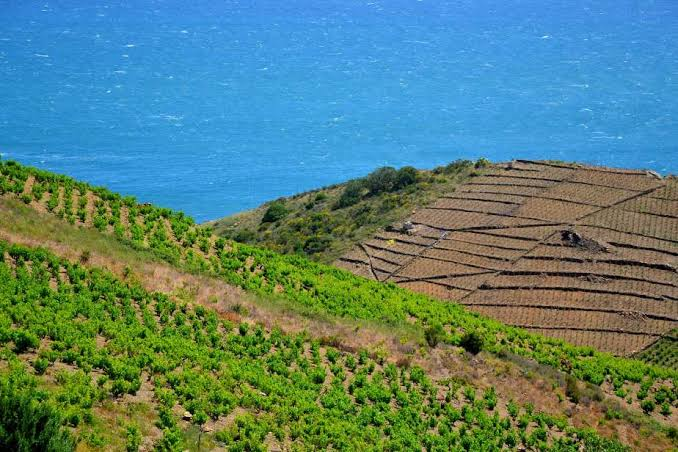

Banyuls
AOP


⟹ Vins & Spiritueux ⟸
Le nom de Banyuls vient de la petite station balnéaire nichée à l'extrémité orientale des Pyrénées, là où la montagne plonge directement dans la Méditerranée. Depuis l'Antiquité, la région est connue pour ses richesses viticoles : Grecs et Phéniciens y auraient implanté les premières vignes sur les coteaux escarpés qui dominent la Côte Vermeille.

La technique du mutage, qui consiste à ajouter de l'alcool vinique au moût en cours de fermentation pour arrêter celle-ci et conserver une partie des sucres naturels du raisin, aurait été perfectionnée par Arnaud de Villeneuve, médecin et alchimiste catalan du XIIIe siècle, à l'université de Montpellier. Cette découverte est à l'origine de tous les vins doux naturels du Roussillon.
Reconnu dès 1936 parmi les toutes premières Appellations d'Origine Contrôlée françaises, le Banyuls doit sa singularité à des vignes plantées en terrasses étroites, soutenues par des kilomètres de murets de pierre sèche, sur des pentes de schiste noir si abruptes que l'essentiel des travaux s'y fait encore à la main ou à dos de mulet.
En 1962, un décret vient consacrer une mention supérieure, le Banyuls Grand Cru, seule appellation française de vin doux naturel à bénéficier de cette distinction : au moins 75 % de grenache noir et un élevage minimal de trente mois en foudre de chêne y sont exigés.
Rimage : vinifié en milieu réducteur (cuve fermée) pour préserver le fruit, il se rapproche d'un vin jeune et gourmand, souvent millésimé.
Traditionnel : élevé en milieu oxydatif, il développe des arômes tertiaires de fruits secs, de tabac, de café et de cacao.
Hors d'âge : élevé plusieurs années, il gagne en complexité rancio et en notes de fruits confits.
Banyuls Grand Cru : exclusivement rouge, au moins 75 % de grenache noir, trente mois d'élevage minimum en foudre de chêne.
Banyuls blanc et rosé : élaborés à partir des grenaches blanc et gris, ils offrent des profils plus légers, sur le fruit blanc et le miel.
L'appellation s'étend sur quatre communes des Pyrénées-Orientales : Banyuls-sur-Mer, Cerbère, Collioure et Port-Vendres, entre mer et montagne.
Banyuls-sur-Mer où les caves coopératives et domaines familiaux proposent dégustations et visites de leurs chais historiques, souvent à quelques mètres de la plage.
Le sentier du Facteur qui traverse les vignes en terrasses offre un panorama unique sur le vignoble plongeant vers la Méditerranée.
Les fêtes des vendanges organisées chaque automne dans les villages de la Côte Vermeille, l'occasion de rencontrer les vignerons et de découvrir les différents millésimes.